فصل نهم — خوشهبندی پیشرفته: مدلهای احتمالاتی، زیرفضاها و گرافها#
درس دادهکاوی — کارشناسی ارشد مهندسی کامپیوتر
پرسش محوری: وقتی مرز گروهها مبهم است، ویژگیهای مفید تنها در بخشی از ابعاد قرار دارند، یا روابط بهجای یک صفحهٔ اقلیدسی بهصورت شبکه بیان میشوند، چگونه میتوان ساختار داده را کشف کرد و از تعبیر بیپشتوانهٔ خروجی یک الگوریتم پرهیز کرد؟
دریافت فایلها: PDF فصل نهم · سورس XeLaTeX و شکلها · کد Python · Notebook اجراشده · دادهٔ همپوشان · دادهٔ پُربعد · ماتریس دوخوشهای · شبکهٔ ساختگی. دادهها همگی ساختگیاند؛ هیچ دادهٔ مشتری واقعی منتشر نشده است.
اهداف یادگیری و نقشهٔ استدلال#
هدف فصل، فهرستکردن نام الگوریتمها نیست. دانشجو پس از مطالعه باید بتواند: (۱) خوشهبندی سخت، فازی و احتمالاتی را با زبان دقیق مقایسه کند؛ (۲) احتمال مسئولیت یک مؤلفه در مدل مخلوط را دستی محاسبه کند؛ (۳) دو گام E و M و محدودیت کمینهٔ محلی را توضیح دهد؛ (۴) مسئلهٔ انتخاب تعداد مؤلفه و بیشبرازش را تشخیص دهد؛ (۵) قاعدهٔ عضویت فازی را از فواصل استخراج کند؛ (۶) توضیح دهد چرا فاصله در فضای پُربعد گمراهکننده میشود؛ (۷) تمایز زیرفضا، دوخوشهای و کاهش بُعد را بگوید؛ (۸) از ماتریس وزندار گراف به لاپلاسین و بردارهای ویژه برسد؛ (۹) یک شاخص همسایهٔ مشترک را محاسبه کند؛ (۱۰) آمار فشردهٔ CF در BIRCH را بیابد؛ و (۱۱) بدون استفاده از برچسب ساختگی در آموزش، نتیجه را ممیزی کند.

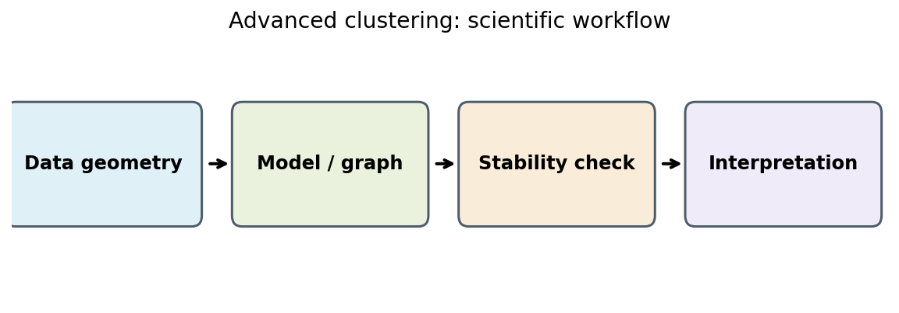
Fig. 130 شکل ۹ـ۱. فرایند تصمیمگیری در خوشهبندی پیشرفته: از هندسه و تعریف خوشه به مدل مناسب، بررسی پایداری و تفسیر مشروط.#
جایگاه موضوع در دو مرجع#
منبع اول Han, Pei & Tong, Data Mining: Concepts and Techniques, 4th ed.، فصل ۹، بخشهای ۹٫۱ تا ۹٫۵، صفحات چاپی ۴۳۱ تا ۴۷۴ و برای نقش دانش پیشین بخش ۹٫۶، صفحات ۴۷۵ تا ۴۷۷ است. منبع دوم Tan, Steinbach, Karpatne & Kumar, Introduction to Data Mining, 2nd ed.، فصل ۸، بخشهای ۸٫۱ تا ۸٫۶، صفحات چاپی ۶۱۴ تا ۶۹۰ است. از Han چارچوب مدلهای احتمالاتی، پُربعد، دوخوشهای، کاهش بُعد و گراف، و از Tan صورتبندی فازی/مخلوط، SNN، خوشهبندی طیفی و مقیاسپذیری را ترکیب کردهایم. مثالهای عددی، همهٔ شکلها و دادههای این فصل تألیفیاند. توضیحات صریح دربارهٔ ارزیابی و دادهٔ ساختگی، انتخاب آموزشی این جزوه است و نباید بهصورت نقلقول از کتاب تلقی شود.
۹ـ۱. مسئلهٔ واقعیِ آغازین: مشتریانی که در مرز دو رفتار قرار دارند#
فرض کنید برای هر مشتری، پس از تعریف واحد اندازهگیری و استانداردسازی معقول، دو ویژگی رفتاری داریم: فراوانی مراجعه و شدت خرید. در فصل هشتم آموختیم که k-means هر مشتری را به نزدیکترین مرکز نسبت میدهد. اما مشتریای که بین دو گروه قرار دارد واقعاً چقدر به هر گروه شباهت دارد؟ چه میشود اگر یک گروه پراکندگیِ کشیده و دیگری پراکندگیِ تقریباً دایرهای داشته باشد؟ در این حالت «مرکز نزدیکتر» لزوماً نشانهٔ عضویت قاطع نیست.
در دادهٔ آموزشی overlap_synthetic.csv دو فرایند تولیدیِ همپوشان بهصورت ساختگی تعبیه شده است. ستون synthetic_component_not_for_fit فقط برای ارزیابی پس از مدل وجود دارد. در دنیای واقعی چنین ستونِ حقیقتِ پنهان وجود ندارد و حتی احتمال خوشهٔ مدل با «احتمال نوع واقعی مشتری» یکی نیست. این نمونه را در سراسر فصل برای مقایسهٔ نگاه سخت، فازی، احتمالاتی و زیرفضایی دنبال میکنیم.

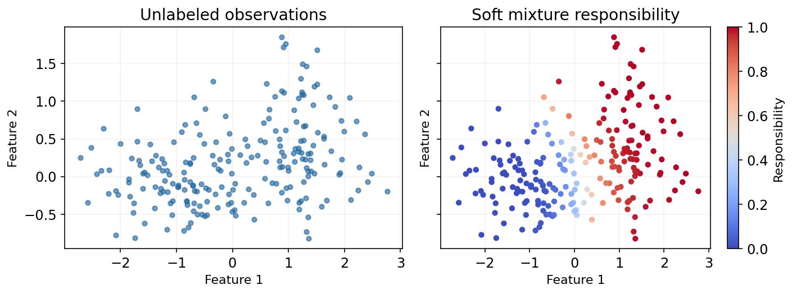
Fig. 131 شکل ۹ـ۲. نمونههای همپوشان و نمایش تدریجی مسئولیت مؤلفههای یک مدل مخلوط؛ رنگ پیوسته به معنی برچسب قطعی نیست.#
۹ـ۲. سه مفهوم متفاوتِ تعلق به گروه#
خوشهبندی سخت (Hard clustering): برای هر مشاهده، یک شناسهٔ خوشه تعیین میشود؛ مثلاً \(z_i\in\{1,2\}\). خوشهبندی فازی (Fuzzy clustering): عددهای تعلق \(u_{ik}\in[0,1]\) برای هر نقطه و هر خوشه تعریف میشوند و معمولاً \(\sum_k u_{ik}=1\). این عددها درجهٔ تعلق در چارچوب تابع هدفاند و بهخودیخود احتمال آماری نیستند. مدل مخلوط احتمالاتی (Mixture model): داده از یک توزیع با مؤلفهٔ پنهان تصور میشود و \(\gamma_{ik}=P(z_i=k\mid x_i,\theta)\) برآورد احتمال پسین عضویت تحت مفروضات مدل است. فازی و احتمالاتی در ظاهر هر دو عددهای بین صفر و یک دارند، اما معنایشان متفاوت است.

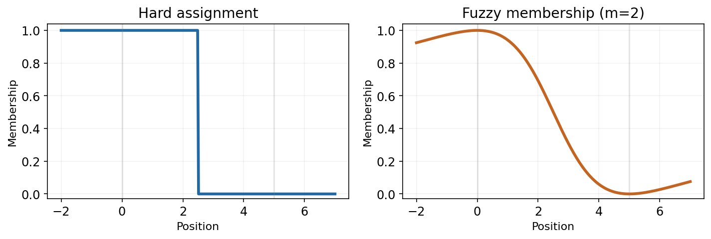
Fig. 132 شکل ۹ـ۳. انتساب سخت در مقابل درجات عضویت فازی بین دو مرکز؛ مرز ناگهانی در سمت چپ به تنهایی عدمقطعیت را بیان نمیکند.#
خطای تفسیری رایج: اگر مدل به مشاهدهای مسئولیت \(0.80\) بدهد، نمیتوان گفت «با احتمال ۸۰ درصد واقعاً این مشتری از این نوع است»؛ مگر اینکه مدل آماری، تعریف مؤلفه و کالیبراسیون آن قابل دفاع باشند. در خوشهبندی بدون برچسب، شناسهٔ مؤلفه ممکن است حتی میان دو اجرای معادل جابهجا شود (label switching).
۹ـ۳. مدل مخلوط گاوسی: فرض و فرمول#
برای بردار \(x\in\mathbb{R}^{d}\)، مدل مخلوط گاوسی (GMM) چگالی زیر را فرض میکند:
در اینجا \(K\) تعداد مؤلفهها، \(\pi_k\) وزن مؤلفه، \(\mu_k\) میانگین و \(\Sigma_k\) ماتریس کوواریانسِ مثبتمعین است. بر خلاف k-means، کوواریانس میتواند خوشهٔ بیضوی و همپوشان را بیان کند. ولی اگر مؤلفهٔ واقعی غیرگاوسی باشد، تقریب گاوسی میتواند چند مؤلفه برای یک گروهِ معنایی بسازد. تعداد «مؤلفههای آماری» الزاماً تعداد «گروههای واقعی کسبوکار» نیست.
برای یک متغیر تکبعدی، \(\mathcal{N}(x\mid\mu,\sigma^2)=\frac{1}{\sqrt{2\pi\sigma^2}}\exp[-(x-\mu)^2/(2\sigma^2)]\). انتخاب کوواریانسهای «کامل»، «قطری» یا «مشترک» تعادلی میان انعطاف مدل و شمار پارامترهاست. استفاده از کوواریانس کامل با تعداد نمونهٔ کم در بُعد بالا ممکن است به برآورد ناپایدار یا ماتریس نزدیک به تکین برسد؛ پس منظمسازی و کنترل مقدار ویژه ضرورت دارند.

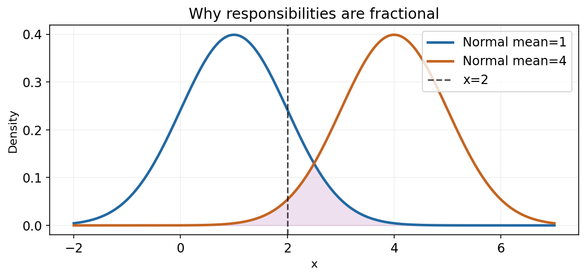
Fig. 133 شکل ۹ـ۴. دو مؤلفهٔ گاوسی همپوشان؛ در ناحیهٔ مشترک، عضویت پسین از مقدار چگالی هر دو مؤلفه اثر میگیرد.#
۹ـ۴. حل دستیِ یک مسئولیت احتمالاتی#
دو مؤلفه با \(\mu_1=1\) و \(\mu_2=4\)، واریانس برابر \(\sigma_1^2=\sigma_2^2=1\) و وزنهای \(\pi_1=\pi_2=0.5\) داریم. برای مشاهدهٔ \(x=2\)، فاصلههای مربعشده به ترتیب \(1\) و \(4\) هستند؛ عامل مشترکِ نرمالسازی چگالی و وزن نیم، در نسبت حذف میشود:
مشاهدهٔ \(x=2\) در خوشهبندی سخت بر اساس نزدیکترین مرکز به گروه اول میرود؛ در مدل مخلوط، هنوز سهم مشخصی برای مؤلفهٔ دوم دارد. این عدد با فرض برابری واریانس و وزنها محاسبه شده و اگر \(\pi_2\) یا \(\sigma_2^2\) عوض شود، جواب عوض خواهد شد. تمرین مهم: برای همان \(x=2\) اگر وزنها \(\pi_1=.2\) و \(\pi_2=.8\) باشند، آیا هنوز مسئولیت مؤلفهٔ اول بالاتر از نیم میماند؟
۹ـ۵. الگوریتم EM از کجا میآید؟#
در دادهٔ بدون برچسب، متغیر پنهان \(z_i\) را نمیبینیم. بیشینهسازی مستقیم \(\sum_i\log\sum_k\pi_k\mathcal{N}(x_i\mid\mu_k,\Sigma_k)\) دشوارتر از حالتی است که عضویتها معلوم باشند. الگوریتم بیشینهسازی امید (Expectation–Maximization) دو مرحله را تکرار میکند. در گام E، با پارامترهای فعلی مسئولیت هر مؤلفه را حساب میکنیم. در گام M، با همین وزنهای نرم، وزنها و پارامترهای توزیعها را بهروزرسانی میکنیم.
در گام E هیچ مشاهدهای تکثیر نمیشود: همان نقطه با وزنهای مختلف در برآورد چند مؤلفه مشارکت میکند. در گام M نیز کوواریانس وزندار پیرامون میانگین جدید محاسبه میشود؛ جابهجا کردن این دو نکته خطای رایج است. کد فصل برای روشنماندن محاسبات، نمونهٔ آموزشیِ یکبعدی و دو مؤلفهای را از صفر پیاده میکند؛ برای کاربرد جدی پُربعد، یک پیادهسازی معتبر با منظمسازی و بررسی همگرایی ضروری است.

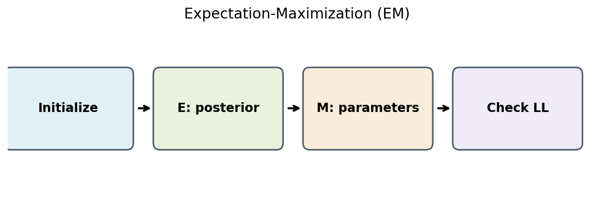
Fig. 134 شکل ۹ـ۵. چرخهٔ EM: مقداردهی اولیه، محاسبهٔ مسئولیت، بازبرآورد پارامترها و بررسی تغییر درستنمایی.#
شبهکد و مسئلهٔ همگرایی#
initialize weights, means, covariances
repeat:
E: compute responsibilities using current parameters
M: update weights and distribution parameters
compute observed-data log likelihood
until improvement is smaller than tolerance
return parameters, responsibilities, diagnostic history
در مفروضات استاندارد EM، هر تکرار درستنمایی مشاهدهشده را کاهش نمیدهد؛ بااینحال تضمینِ رسیدن به بهترین بهینهٔ سراسری ندارد. بهینهٔ محلی، وابستگی به شروع اولیه، فروپاشی یک مؤلفه روی چند مشاهده و تکینشدن کوواریانس از خطرها هستند. به همین سبب در عمل چند شروع، کف واریانس/regularization و معیار توقف باید گزارش شوند. افزایشیبودن منحنی درستنمایی، به معنای «درستبودن تعداد خوشهها» نیست.

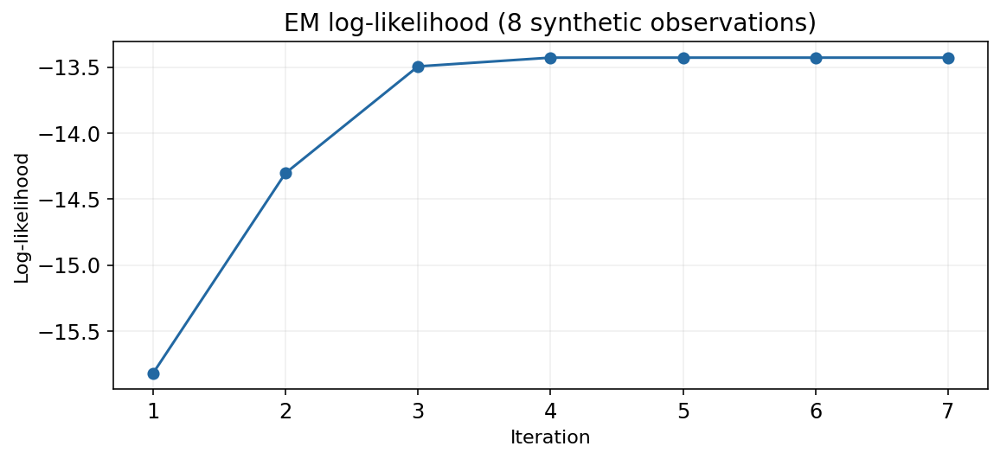
Fig. 135 شکل ۹ـ۶. تغییر لگاریتم درستنمایی در اجرای یک مدل آموزشی روی فقط هشت مشاهدهٔ ساختگی؛ عددها متعلق به همین مثالاند.#
۹ـ۶. تعداد مؤلفهها را چگونه انتخاب کنیم؟#
در افزایش \(K\)، بیشینهٔ درستنمایی آموزشی معمولاً بهتر میشود؛ اما این به معنی مدل بهتر روی دادهٔ دیدهنشده نیست. معیار اطلاعات بیزی (BIC) برآوردی از مصالحهٔ برازش و پیچیدگی است:
\(p\) شمار پارامترهای آزاد است. برای یک مخلوط گاوسی تکبعدی با \(K\) مؤلفه و واریانسهای مستقل، \(p=(K-1)+K+K=3K-1\)؛ برای \(K=2\)، پنج پارامتر میشود. در بُعد \(d\) با کوواریانس کامل برای هر مؤلفه: \(p=(K-1)+Kd+K d(d+1)/2\). BIC کمتر در میان مدلهای مقایسهشده ارجح است، اما این نتیجه به مفروضات خانوادهٔ مدل و اندازهٔ نمونه وابسته است. بررسی پایداری، ارتباط علمی اجزا و تکرار آزمایش همچنان لازم است.
دام رایج: برچسبهای پنهان ساختگی را برای انتخاب \(K\) یا تنظیم ابرپارامترها استفاده نکنید؛ آنها فقط برای وارسی پس از اتمام انتخاب مدل نگه داشته شدهاند. اگر همان دادهٔ نهایی بارها برای گزینش مدل استفاده شود، ارزیابی غیرمستقل خواهد شد.
۹ـ۷. خوشهبندی فازی c-means و تفاوت معنایی آن با GMM#
در خوشهبندی فازی c-means با درجهٔ فازیسازی \(m>1\)، تابع هدف متداول چنین است:
وقتی همهٔ فاصلهها غیرصفر باشند، درجهٔ عضویت نقطهٔ \(x_i\) در مرکز \(c_k\) برابر است با:
حل دستی: برای \(x=2\) و مراکز \(c_1=0\)، \(c_2=5\) و \(m=2\)، فاصلهها \(2\) و \(3\) است؛ بنابراین \(u_1=1/[1+(2/3)^2]=9/13\approx0.692308\) و \(u_2=4/13\approx0.307692\). این نسبت با \(0.817574\) حاصل از GMM در بخش ۹ـ۴ فرق دارد، چون دو عدد تابع دو مدل متفاوتاند.
اگر نقطه دقیقاً بر یکی از مراکز منطبق شود، فرمولِ تقسیم بر فاصلهٔ صفر را نباید مستقیم اجرا کرد؛ در نمونهٔ آموزشی، همهٔ وزن به همان مرکز داده میشود، و اگر چند مرکز هممکان باشند وزن بهطور مساوی بین آنها تقسیم میشود. این صرفاً قرارداد پیادهسازی برای حالت مرزی است.

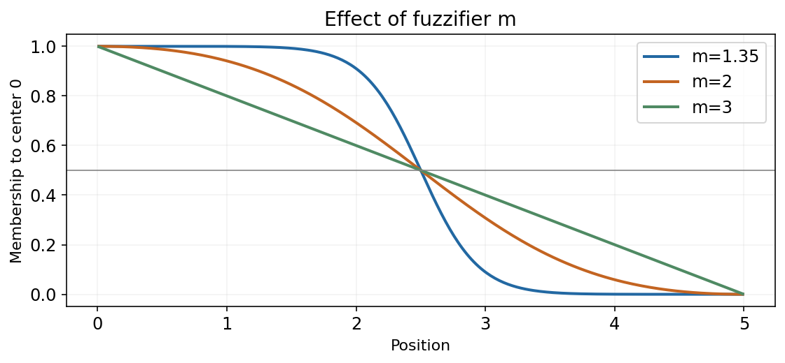
Fig. 136 شکل ۹ـ۷. نقش پارامتر \(m\) در میزان نرمبودن عضویت؛ انتخاب آن تعبیر خروجی را تغییر میدهد.#
۹ـ۸. بهروزرسانی مراکز فازی و یک مثال ساده#
در گام بهروزرسانیِ مراکز، هر مشاهده با توان \(m\) عضویت خود وزن میگیرد:
این فرمول از میانگین عادی متفاوت است: نقطهای که عضویت \(0.2\) داشته باشد در \(m=2\) با وزن \(0.04\) وارد میشود، نه با وزن \(0.2\). با افزایش \(m\)، مرزهای عضویت نرمتر میشوند؛ اما نباید از نرمبودن اعداد، «کالیبراسیون احتمال» نتیجه گرفت. fuzzy_cmeans_1d در کد فصل، بهروزرسانی مرکز و عضویت را روی شش نمونه انجام میدهد و برای شفافیت آموزش از نسخهٔ تکبعدی استفاده میکند.

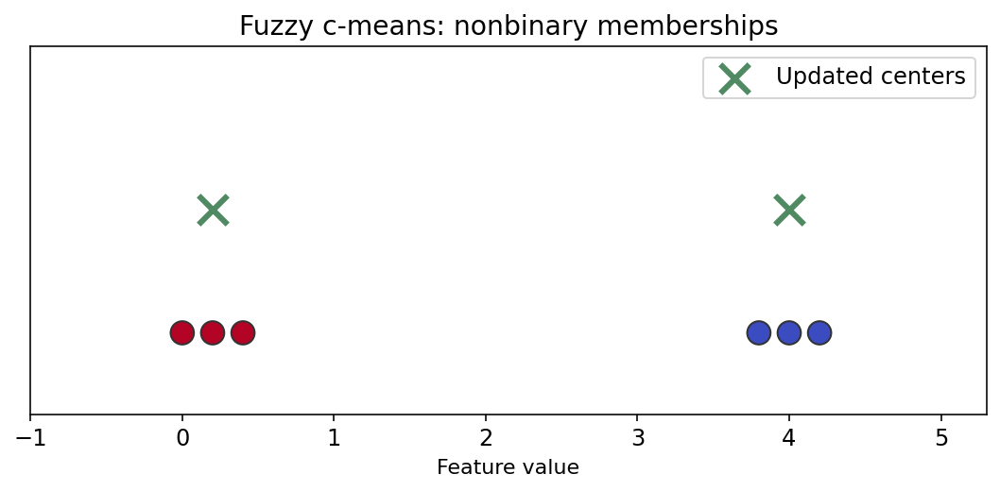
Fig. 137 شکل ۹ـ۸. دو مرکز فازی و عضویت پیوستهٔ نمونههای تکبعدی؛ نمایندهٔ هر خوشه با میانگینِ وزندار بهروز میشود.#
جمعبندی این دو روش: GMM با مدل چگالی کار میکند و کوواریانس و وزن مخلوط دارد؛ FCM تابع هدفی مبتنی بر فاصله و درجهٔ تعلق دارد. هر دو میتوانند به شروع حساس باشند. اگر داده دارای گروههایی با هندسه و اندازهٔ بسیار متفاوت باشد، مدل و وزن ویژگیها باید با مسئله سازگار شوند.
۹ـ۹. چرا دادهٔ پُربعد، هندسهٔ خوشه را تغییر میدهد؟#
فاصلهٔ اقلیدسی در بُعد بالا ممکن است بهدلیل ویژگیهای نامربوط، نویز، همبستگی و مقیاس، قدرت تمایز کمی داشته باشد. در یک تصویر ساده، با افزایش شمار ابعادِ نویزیِ مستقل، نسبت پراکندگی فاصلهها به میانگین آنها میتواند کاهش یابد؛ در نتیجه «نزدیکترین» و «دورترین» نمونه از نظر نسبت فاصله شبیهتر میشوند. این مشاهده تحت فرضهای آماری خاص است و به معنی ناممکنبودن هر خوشهبندی پُربعد نیست. بُعد مؤثر، ساختار همبستگی و معیار فاصله اهمیت بیشتری از صرف تعداد ستونها دارند.

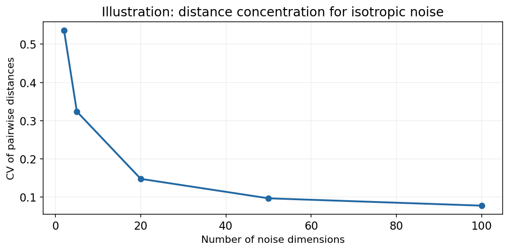
Fig. 138 شکل ۹ـ۹. یک آزمایش مستقل روی نویز گاوسی: با افزایش تعداد ابعاد، ضریب تغییرات فاصلههای بین زوج نمونهها کاهش مییابد.#
در دادهٔ آموزشی دوم، ۲۰ ویژگی داریم، اما فقط دو ویژگی نخست حاوی ساختارِ تعبیهشدهاند و ۱۸ ویژگی دیگر نویزند. اگر بدون تعریف ویژگی و مقیاسگذاری، همه را یکسان وارد الگوریتم کنیم، فاصله میتواند تحت تأثیر متغیرهای نامربوط قرار بگیرد. در کار کاربردی، انتخاب ویژگی مبتنی بر تخصص موضوعی و ارزیابی پایداری باید بر گزینش صرفاً ظاهری در نمودار مقدم باشد.

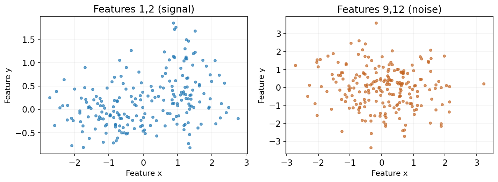
Fig. 139 شکل ۹ـ۱۰. ساختار دوبعدی در دو ویژگی مرتبط در برابر دو ویژگی نویزی از همان رکوردها؛ خوشه ممکن است فقط در زیرمجموعهای از ستونها دیده شود.#
۹ـ۱۰. زیرفضا (Subspace) در برابر خوشهبندی در همهٔ ویژگیها#
در خوشهبندی زیرفضایی، برای هر گروه ممکن است زیرمجموعهٔ ویژگیهای مؤثر متفاوت باشد. در روشهای محورموازی (axis-parallel) تنها زیرمجموعهای از مختصات انتخاب میشود؛ در روشهای جهتدار (arbitrarily oriented) گروه ممکن است در ترکیبی خطی از ویژگیها ظاهر شود. مثال آموزشی: در بین مشتریان، یک گروه با ترکیب تعداد مراجعه و مدت زمان پاسخ تعریف میشود، اما گروه دوم با نوع خدمت و حجم خرید؛ الزاماً یک فهرست ویژگی برای هر دو گروه مناسب نیست.
جستوجوی همهٔ زیرمجموعههای ویژگی با \(d\) بُعد، در حالت خام \(2^d-1\) حالت دارد؛ بنابراین روشهای پیشرفته به راهبردهای هرس، جستوجوی مرحلهای یا مدلهای منظمسازی وابستهاند. انتخاب زیرفضا بر مبنای همین نمونهها و سپس سنجش «معناداری» روی همان نمونهها میتواند به کشف تصادفی منجر شود. پس لازم است پایایی مجموعهٔ ویژگیهای انتخابی تحت نمونهگیری مجدد و دادهٔ مستقل بررسی شود.
۹ـ۱۱. تفاوت کاهش بُعد و زیرفضا: دو پاسخ به دو سؤال#
کاهش بُعد بازنمایی تازهای \(Z=XW\) میسازد که ممکن است ترکیبی از ستونها باشد؛ خوشهبندی زیرفضایی به دنبال ساختار گروهها در زیرمجموعهها یا جهتهای خاص میگردد. PCA جهت بیشترین واریانس را پیدا میکند، ولی بیشترین واریانس لزوماً همان جهتی نیست که گروهها را بهتر جدا میکند. اگر واریانس نویز از سیگنال بیشتر باشد، PCA ممکن است جهت مورد نظر ما را کنار بگذارد. از سوی دیگر، یک روش زیرفضاییِ بهینه برای جداسازی مصنوعی نیز ممکن است در دادهٔ مستقل پایدار نباشد.
مثال مفهومی: دو جمعیت با میانگینهای متفاوت در \(x_1\)، اما نویز بزرگ در \(x_2\). مؤلفهٔ اول PCA احتمالاً جهت \(x_2\) میشود، هرچند تفاوت گروهی اصلی در \(x_1\) است. پس کاهش بُعد ابزار کمکی است؛ باید با هدف علمی و معیار اعتبار سنجیده شود.
۹ـ۱۲. دوخوشهای (Biclustering): همزمان گروهی از سطرها و ستونها#
در یک ماتریس مشتری × کالا، ممکن است گروهی از مشتریان صرفاً برای مجموعهٔ محدودی از کالاها الگوی مشابهی داشته باشند. این ویژگی در خوشهبندی عادیِ تمام ستونها محو میشود. دوخوشهای زیرماتریسی از سطرها و ستونها را پیدا میکند که الگوی مشخصی دارد. سطرها یا ستونها در دوخوشههای متفاوت میتوانند همپوشانی داشته باشند؛ بنابراین دوخوشهای لزوماً افرازِ جدا از هم نیست.
در bicluster_synthetic.csv، زیرماتریس سطرهای ۳ تا ۶ و ستونهای ۴ تا ۸ دارای الگوی جمعپذیر ساخته شده است؛ باقی ماتریس عمداً از مقادیر نویزی مستقل پر شده است. این «مکانِ الگو» یک حقیقت ساختگی برای آموزش است و در دادهٔ واقعی باید کشف شود، نه اینکه از قبل به الگوریتم داده شود.

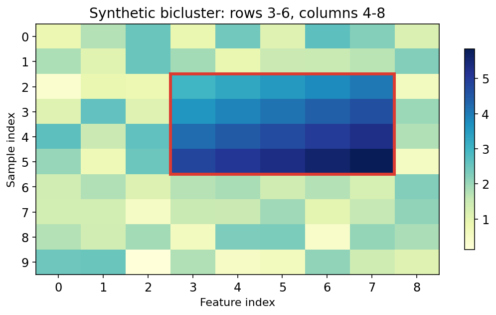
Fig. 140 شکل ۹ـ۱۱. زیرماتریس دارای الگوی جمعپذیر در دادهٔ ساختگی؛ گروه معنادار، همزمان مجموعهای از سطرها و ستونهاست.#
۹ـ۱۳. حل دستیِ معیار باقیماندهٔ دوخوشهای#
برای یک زیرماتریس \(A_{I,J}\)، معیار میانگین مربع باقیمانده (Mean Squared Residue) یکی از صورتبندیهای رایجِ همرفتاری جمعپذیر است:
برای ماتریس سادهٔ دو در دو
میانگین سطرها \(3.5\) و \(5.5\)، میانگین ستونها \(4\) و \(5\) و میانگین کل \(4.5\) است. در خانهٔ بالا-چپ باقیمانده \(3-3.5-4+4.5=0\)؛ در سه خانهٔ دیگر نیز صفر میشود؛ پس \(\operatorname{MSR}=0\). این به معنی یکسانبودن همهٔ مقادیر نیست، بلکه نشان میدهد اثر سطر و ستون بهطور جمعپذیر بیان میشود. اگر یک خانه جهش غیرجمعپذیر داشته باشد، MSR بزرگتر میشود.

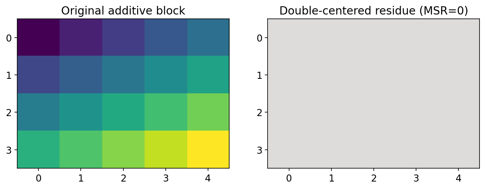
Fig. 141 شکل ۹ـ۱۲. دوخوشهٔ دارای اثرهای سطر و ستون، و باقیمانده پس از دوبار مرکزکردن؛ MSR صفرِ دادهٔ ساختگی دلیل کشف در دادهٔ واقعی نیست.#
محدودیت: یک زیرماتریس بسیار کوچک نیز ممکن است MSR پایین داشته باشد. بنابراین اندازهٔ دوخوشه، آزمون تصادفیسازی، تکرارپذیری و جستوجوی چندگانه را باید همراه معیار گزارش کرد. در این فصل، کد فقط محاسبهٔ دقیق MSR برای زیرماتریسِ دادهشده را انجام میدهد، نه جستوجوی کاملِ خودکار تمام دوخوشهها؛ این تمایز عمداً شفاف بیان شده است.
۹ـ۱۴. خوشهبندی شبکهای: وقتی فاصلهٔ اقلیدسی کافی نیست#
برای کاربران شبکهٔ اجتماعی، صفحات وب یا اجزای یک سامانه، داده میتواند مجموعهٔ رأسها و یالهای وزندار باشد. در چنین مسئلهای معنای نزدیکبودن به جای فاصلهٔ مختصاتی، از اتصالات و وزن روابط به دست میآید. ماتریس مجاورت وزندارِ متقارن \(W\) با \(w_{ij}\ge0\) نشان میدهد کدام رأسها و با چه شدتی مرتبطاند. ماتریس درجه \(D\) قطری است و \(D_{ii}=\sum_j w_{ij}\).
در گراف ساختگی این فصل هشت رأس داریم: دو گروه چهارتایی با وزن داخلی \(1\) و فقط یک یال ضعیف با وزن \(0.12\) بین رأسهای ۴ و ۵. هدف آموزشی این است که بفهمیم چرا یک پیوند ضعیف نباید لزوماً دو جامعهٔ پرتراکم را به یک گروهِ یکپارچه تبدیل کند. این شبکه هیچ نام یا اطلاعات واقعی کاربر ندارد.

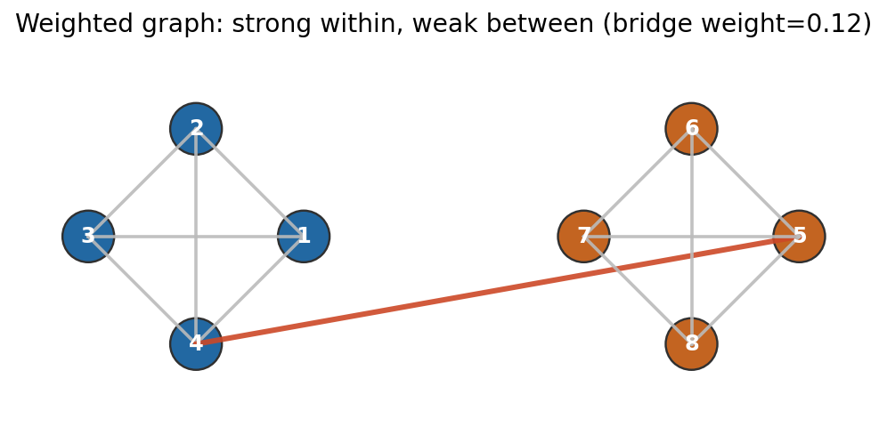
Fig. 142 شکل ۹ـ۱۳. دو بخش متراکمِ گراف و یک پل ضعیف با وزن \(0.12\)؛ خوشهبندی شبکهای به ساختار ارتباط توجه میکند.#
۹ـ۱۵. خوشهبندی طیفی از لاپلاسین تا فضای جدید#
لاپلاسین نامنظم گراف \(L=D-W\) و لاپلاسین نرمالشدهٔ متقارن، برای درجههای مثبت، بهصورت زیر است:
ایدهٔ خوشهبندی طیفی این است که یک معیار جداسازیِ گرافی را به مسئلهٔ بردارهای ویژه تبدیل کنیم. برای دو جامعهٔ ضعیفمتصل، بردارهای ویژهٔ مربوط به مقادیر ویژهٔ کوچک میتوانند بازنماییای بدهند که در آن رأسهای هر جامعه نزدیکتر شوند. در یک پیادهسازی متداولِ \(K\)-گروهی، \(K\) بردار ویژهٔ متناظر با کوچکترین مقادیر ویژه را انتخاب، سطرهای ماتریس بردارویژه را نرمال و سپس آنها را خوشهبندی میکنیم. گزینههای دیگری برای لاپلاسین و نرمالسازی وجود دارد و نتایج دقیقاً یکسان نیستند.
حل دستیِ لاپلاسین برای دو رأس: اگر \(W=\begin{bmatrix}0&1\\1&0\end{bmatrix}\)، آنگاه \(D=I\) و \(L_{\mathrm{sym}}=\begin{bmatrix}1&-1\\-1&1\end{bmatrix}\). مقادیر ویژه \(0\) و \(2\) هستند. بردار متناظر با مقدار صفر، بردار ثابتِ جهت نرمالشده است. برای دو جزء جدا، دو مقدار ویژهٔ صفر داریم؛ وصلکردن دو جزء با یک یال ضعیف، دومین مقدار ویژه را به عددی مثبتِ کوچک تغییر میدهد.
در شبکهٔ هشترأسیِ خودمان، مقادیر ویژهٔ نخست تقریبی برابر ۰ و ۰٫۰۱۸۹۵۳ هستند؛ مقدار سوم ۱٫۲۹۴۸۷۲ است. این فاصله به ساختار دو جامعهٔ دادهٔ همین مثال اشاره دارد و معیار عمومیِ انتخاب قطعی \(K\) نیست. کد spectral_embedding ماتریس وزن را میگیرد، مقادیر ویژه و نهفتهسازی سطرنرمالشده را برمیگرداند، اما عمداً مرحلهٔ خوشهبندی نهاییِ این نهفتهسازی را به استفادهکننده واگذار میکند.

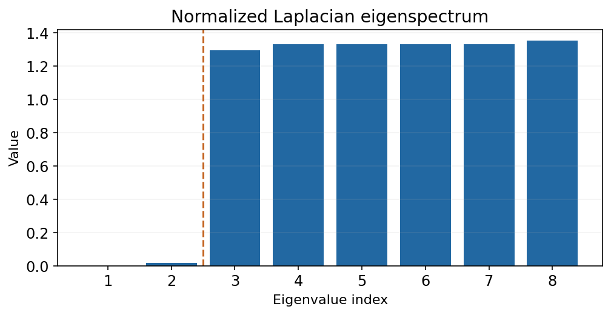
Fig. 143 شکل ۹ـ۱۴. طیف لاپلاسین نرمالشدهٔ گراف هشترأسی؛ فاصلهٔ مقدار ویژهٔ دوم و سوم در این مثال دیده میشود.#

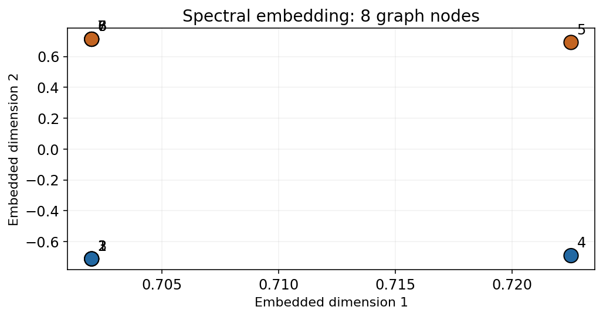
Fig. 144 شکل ۹ـ۱۵. نهفتهسازی طیفی همان هشت رأس در فضای بردارهای ویژه؛ خوشهبندی روی این فضا انجام میشود، نه روی مختصات اصلیِ ناموجود.#
۹ـ۱۶. چه وقت خوشهبندی طیفی مناسب نیست؟#
کیفیت خروجی به ساخت گراف شباهت وابسته است: انتخاب \(k\) همسایه، پهنای هستهٔ شباهت، حذف یالهای ضعیف و سیاست وزندهی میتواند شکل گروهها را تغییر دهد. ساخت ماتریس تشابهِ متراکم برای \(n\) مشاهده حافظهٔ مرتبهٔ \(O(n^2)\) میخواهد؛ محاسبهٔ کامل طیف نیز در ابعاد بزرگ پرهزینه است. روشهای ماتریس تُنُک و حلکنندهٔ ویژهٔ جزئی کمک میکنند، ولی کیفیت تقریب و حساسیت پارامتر باید گزارش شود. از طرف دیگر گراف نامتقارن یا دارای درجهٔ صفر، نیازمند قرارداد متفاوتی برای نرمالسازی است؛ کد آموزشیِ ما صریحاً چنین ورودیای را رد میکند، نه اینکه بیهشدار جوابی نامعتبر بدهد.
۹ـ۱۷. شباهت همسایهٔ مشترک (SNN): حل عددی#
در دادهای با چگالی متغیر، دو نقطه ممکن است فاصلهٔ هندسی نسبتاً کمی داشته باشند اما به دو ناحیهٔ متفاوت تعلق داشته باشند. مفهوم همسایهٔ مشترک از بافت محلی کمک میگیرد. اگر مجموعههای همسایگی \(N(A)=\{2,3,4\}\) و \(N(B)=\{2,4,5\}\) باشند، شباهت سادهٔ همسایهٔ مشترک عبارت است از
برخی تعریفها وزندهی بر پایهٔ رتبهٔ همسایهها دارند؛ عدد ۲ مربوط به نسخهٔ شمارشی ساده است و نباید به کل خانوادهٔ SNN تعمیم داده شود. همچنین، اگر دو نقطه در همسایگی یکدیگر نیستند ممکن است در ساخت گراف SNN، هرچند چند همسایهٔ مشترک داشته باشند، یال حذف شود؛ این تصمیم تابع قرارداد روش است.

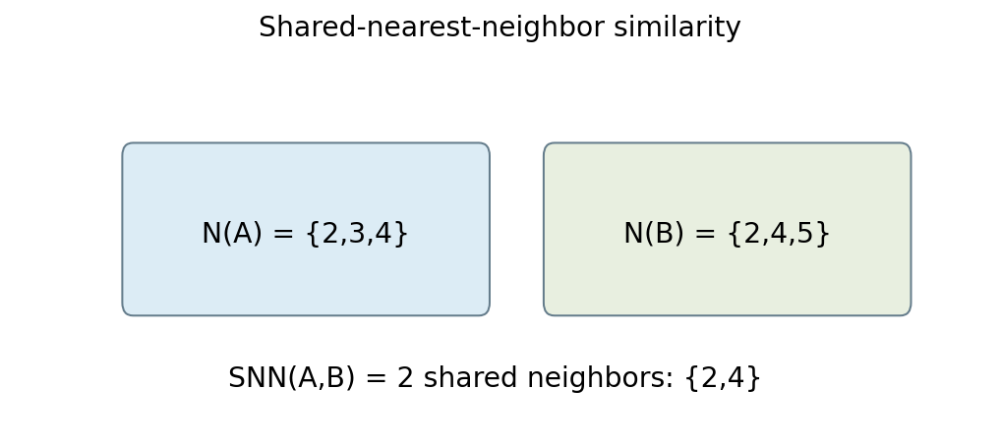
Fig. 145 شکل ۹ـ۱۶. مثال شمارشی SNN با دو همسایهٔ مشترک؛ تفسیر شباهت به تعریف همسایگی مقدم است.#
۹ـ۱۸. تجزیهٔ ماتریس نامنفی (NMF) و خوشهبندی#
وقتی داده ذاتاً نامنفی است، مانند ماتریس تعداد واژهها یا مصرف محصولات، تجزیهٔ نامنفی تقریب \(V\approx WH\) را پیشنهاد میدهد که در آن \(V\ge0\)، \(W\ge0\) و \(H\ge0\). اگر \(V\) ابعاد \(n\times d\) و رتبهٔ نهفته \(r\) داشته باشد، آنگاه \(W\) ابعاد \(n\times r\) و \(H\) ابعاد \(r\times d\) دارد. سطر \(W\) میتواند شدت مؤلفههای نهفته برای هر نمونه را نمایش دهد؛ سپس میتوان برای خوشهبندی روی \(W\) کار کرد. این روش به خودی خود برچسب خوشه یا تضمین جدایی نمیدهد.
در کد فصل، یک بهروزرسانی ضربی آموزشی برای \(W\) و \(H\) پیاده شده است. خطای بازسازی با تکرار کاهش مییابد، اما جواب به آغاز اولیه و رتبه وابسته است و تجزیه یکتا نیست: تغییر مقیاس یکی از عوامل و تغییر معکوس عامل دیگر، حاصلضرب را ثابت نگه میدارد. NMF بر دادهٔ منفی بدون تبدیل مناسب تعریف متداولی ندارد؛ کد ما چنین ورودیای را رد میکند.

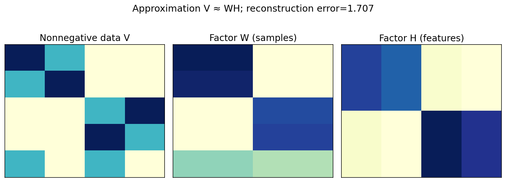
Fig. 146 شکل ۹ـ۱۷. یک ماتریس نامنفی و دو عاملِ محدود به مقادیر غیرمنفی؛ کاهش خطای بازسازی به معنی کشف موضوعات واقعی نیست.#
۹ـ۱۹. مقیاسپذیری و BIRCH: چرا آمار فشرده لازم است؟#
در دادهٔ بزرگ، نگهداری همهٔ فاصلههای زوجی یا جستوجوی تکراری روی کل داده گران است. BIRCH بهجای نگهداری تکتک مشاهدهها در هر تصمیم، مفهوم ویژگی خوشهای (Clustering Feature یا CF) را به کار میبرد. برای یک مجموعهٔ \(C=\{x_1,\ldots,x_N\}\) تعریف کنید:
این تعریف \(SS\) را مجموع مربع نرم بردارها به صورت عدد اسکالر در نظر میگیرد. در برخی ارائهها آمار مربعها به صورت مولفهای نگهداری میشود و باید قرارداد را هنگام مقایسه روشن کرد. دو CF با جمع مؤلفهبهمؤلفه ادغام میشوند. مرکز و پراکندگیِ درونگروه از CF بازیابی میشوند، اما مختصات هر مشاهدهٔ منفرد از این سه آمار بازیابیپذیر نیست.

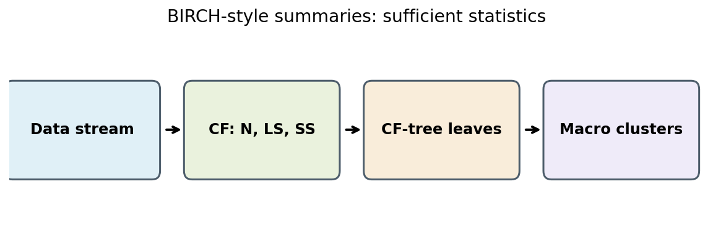
Fig. 147 شکل ۹ـ۱۸. جریان فشردهسازی با CF و سپس خوشهبندی مجموعهٔ خلاصهشده؛ این نمودار جایگزین جزئیات درخت CF در پیادهسازی کامل نیست.#
۹ـ۲۰. حل دستیِ CF و محاسبهٔ SSE بدون دادهٔ خام#
سه نقطهٔ دوبعدی \(x_1=(1,1)\)، \(x_2=(2,1)\) و \(x_3=(5,4)\) را در نظر بگیرید. با جمعزدن مؤلفهها، داریم:
مرکز \(LS/N=(8/3,2)\) است. مجموع مربعات فاصله تا مرکز با اتحاد شناختهشده محاسبه میشود:
به این ترتیب فقط با ذخیرهٔ \(N\) و \(LS\) و \(SS\)، مرکز و SSE را میتوان حساب کرد. اگر دادهها را در دو بلوک بخوانیم و CF هر بلوک را بسازیم، ادغام آنها باید همین جواب را بدهد؛ آزمون واحد فصل این خاصیت را بررسی میکند. الگوریتم BIRCH واقعی افزون بر این آمار، سیاست آستانه، ظرفیت گره، شاخهبندی درخت و مراحل خوشهبندی میانی دارد. کد فصل فقط CF و خاصیت جمعپذیری آن را اجرا میکند، نه پیادهسازی کامل BIRCH.

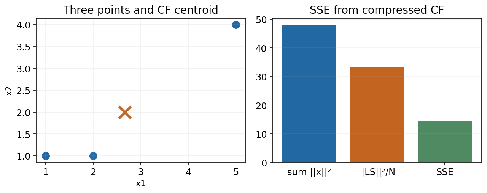
Fig. 148 شکل ۹ـ۱۹. سه نقطه، مرکز و بازیابی SSE از خلاصهٔ CF؛ مقدار ۱۴٫۶۶۶۷ مربوط به همین سه نقطه است.#
۹ـ۲۱. CURE و طرحهای دیگری برای مقیاسپذیری#
یکی از محدودیتهای روشهای مبتنی بر یک مرکز آن است که شکلهای کشیده یا غیرکروی را خوب نمایندگی نمیکنند. در روش CURE، چند نقطهٔ نمایندهٔ پراکنده از خوشه انتخاب و بهسمت مرکز منقبض میشوند تا شکل خوشه بهتر بیان شود. این راهبرد میتواند در مقایسه با تکمرکز نسبت به شکلهای غیرکروی مقاومتر باشد، ولی هزینهٔ انتخاب نمایندگان و ساختار ادغام دارد. به همین دلیل در متن، CURE بهصورت مقایسهٔ مفهومی آمده و در کد، اجرای ناقص آن بهعنوان «الگوریتم کامل» عرضه نشده است. همچنین BIRCH و CURE جایگزین بررسی نویز، پایداری و ویژگیهای دامنه نمیشوند.
۹ـ۲۲. راهنمای انتخاب روش بر اساس ساختار مسئله#
مسئله و داده |
گزینهٔ قابل بررسی |
هشدار اصلی |
|---|---|---|
دو گروه همپوشان با پراکندگی متفاوت |
GMM با کوواریانس سنجیده |
تعداد مؤلفه و فرض گاوسی |
تعلق تدریجیِ مبتنی بر فاصله |
Fuzzy c-means |
عضویت فازی، احتمال آماری نیست |
گروه در زیرمجموعهای از ستونها |
Subspace clustering |
جستوجوی چندگانه و ناپایداری |
زیرماتریسِ سطر و ستونِ همرفتار |
Biclustering |
انتخاب اندازهٔ الگو و معنی MSR |
شبکه یا ساختار بر اساس یال |
Spectral / SNN |
نحوهٔ ساخت گراف |
دادهٔ نامنفیِ دارای عوامل نهفته |
NMF سپس خوشهبندی |
نامعینی عوامل و رتبه |
جریان دادهٔ بزرگ |
BIRCH و خلاصهٔ CF |
فشردهسازی ممکن است جزئیات را حذف کند |

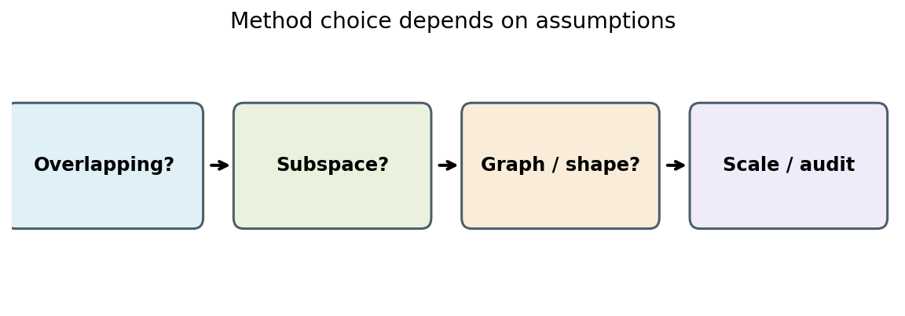
Fig. 149 شکل ۹ـ۲۰. انتخاب روش براساس عدمقطعیتِ عضویت، وجود زیرفضا، ساختار گراف و محدودیت مقیاس؛ هیچ روش یگانهای برای همهٔ دادهها بهینه نیست.#
در تصمیم واقعی، ابتدا منبع داده، واحد مشاهده و خطای اندازهگیری را روشن کنید. سپس مشخص کنید آیا مدل نرم را برای بیان عدمقطعیت میخواهید، یا گروهها در فضای معمولی تفکیکپذیر نیستند، یا اصلاً داده از نوع گراف است. آنگاه یک خط پایهٔ سادهٔ فصل هشتم را در کنار روش پیشرفته قرار دهید. هیچ افزایش امتیاز داخلی نباید بدون بررسی تفسیرپذیری و ثبات نتیجه به «کشف معتبر» تبدیل شود.
۹ـ۲۳. آزمایش بازتولیدپذیر و ممیزی#
کد chapter09_examples.py و Notebook همراه فصل، بدون دادهٔ بیرونی، این موارد را محاسبه میکنند: احتمال مسئولیت دستی \(0.817574\)، عضویت فازی \(9/13\)، تکرارهای EM تکبعدی، بردارهای ویژهٔ لاپلاسین، شمارش همسایهٔ مشترک، MSR یک زیرماتریس، NMF و آمار CF. فایلهای ساختگی با بذر ثابت ۲۲۰۹ تولید میشوند. نتایج اصلی در example_results.json ثبت شدهاند.
مرزبندی شفاف قابلیت اجرا: GMM کد آموزشی تکبعدی و دو مؤلفهای است؛ FCM کد تکبعدی است؛ طیفی فقط نهفتهسازیِ گراف وزندار را انجام میدهد؛ دوخوشهای فقط امتیازدهی یک زیرماتریس موجود را محاسبه میکند؛ NMF یک الگوریتم ضربی آموزشی است؛ BIRCH فقط CF را نشان میدهد. بنابراین ادعای پیادهسازی کامل همهٔ الگوریتمهای فصل نداریم. این انتخاب کمک میکند دانشجو هر فرمول را خطبهخط با مثال دستی تطبیق دهد.
برای ارزیابی کاربردی باید حداقل چند مقدار شروع، تغییر در مقیاس یا تعداد ویژگی، بازنمونهگیری، حساسیت به پارامتر و تفکیک دادهٔ انتخاب مدل از دادهٔ ارزیابی بررسی شود. استفاده از متغیر ساختگیِ منشأ مؤلفه در تعیین ابرپارامترها مجاز نیست. همچنین نتایج این مثالهای مصنوعی هیچ ادعایی دربارهٔ مشتریان واقعی یا دادههای حساس ندارند.
۹ـ۲۴. تمرینها و پروژهٔ کوتاه#
بخش اول — محاسبهٔ دستی
۱. برای \(x=2\) در مثال ۹ـ۴، با وزنهای \(\pi_1=.2\) و \(\pi_2=.8\)، مسئولیتها را از ابتدا محاسبه کنید و با حالت نیم-نیم مقایسه کنید.
۲. همان مثال را با واریانسهای \(1\) و \(4\) تکرار کنید؛ چرا عامل نرمالسازی دیگر حذف نمیشود؟
۳. نشان دهید \(\sum_k\gamma_{ik}=1\) و برای یک مشاهده تفاوت این هویت با معنای احتمال واقعی را توضیح دهید.
۴. برای چهار نقطهٔ \([0,1,4,5]\) و دو مرکز آغازین \(0\) و \(5\)، مسئولیتها را در گام E با واریانس برابر حساب کنید.
۵. با همان مسئولیتها، \(N_k\) و میانگینهای جدید را در گام M حساب کنید.
۶. تعداد پارامترهای آزاد GMM با سه مؤلفه، چهار ویژگی و کوواریانس کامل را حساب کنید.
۷. اگر \(\log\widehat L=-125\) و \(n=100\) و \(p=5\) باشد، BIC را به دست آورید؛ توضیح دهید چرا باید مدل رقیب را نیز بسنجیم.
۸. برای \(x=3\)، مراکز \(0\) و \(6\) و \(m=2\)، عضویت فازی را محاسبه کنید.
۹. همان نقطه را با \(m=3\) بررسی کنید؛ آیا مرکز تغییر کرده است یا فقط نرمی عضویت؟
۱۰. برای سه مشاهده و عضویتهای دادهشده، فرمول مرکزِ وزندارِ FCM را با \(m=2\) اعمال کنید.
۱۱. دو ماتریس \(2\times2\) بسازید: یکی با MSR صفر و دیگری با MSR مثبت، و همهٔ میانگینها را نشان دهید.
۱۲. برای \(N=4\)، \(LS=(6,8)\) و \(SS=40\)، مقدار SSE را حساب کنید و شرط غیرمنفیبودن آن را بیان کنید.
بخش دوم — تحلیل و طراحی
۱۳. توضیح دهید چرا «احتمال مسئولیت ۰٫۸» بدون اعتبارسنجی مدل با احتمال قطعی نوع مشتری یکسان نیست.
۱۴. تفاوت اصلی تابع هدف FCM و درستنمایی GMM را با یک جدول دو ستونی توضیح دهید.
۱۵. چه شرایطی میتواند باعث تکینشدن کوواریانس یک مؤلفهٔ گاوسی شود؟ دو راه کنترل پیشنهاد کنید.
۱۶. نمونهای بسازید که PCA بیشترین واریانس را حفظ کند، ولی بعدِ تفکیککنندهٔ گروهها را ضعیف کند.
۱۷. نشان دهید چرا جستوجوی تمام زیرمجموعههای ۲۰ ویژگی با افزایش بُعد دشوار میشود.
۱۸. بهصورت مفهومی مقایسه کنید زیرفضای محورموازی و زیرفضای چرخیده چه تفاوتی دارند.
۱۹. ماتریس مشتری × محصولی طراحی کنید که فقط یک زیرماتریس کوچک دارای الگوی همرفتاری باشد.
۲۰. برای گراف زنجیرهای سه رأس، \(W\)، \(D\) و لاپلاسین نامنظم \(L\) را بنویسید.
۲۱. توضیح دهید در گراف هشترأسی فصل، افزایش وزن پل از \(0.12\) به \(1\) چه معنای کیفی برای جداسازی طیفی دارد.
۲۲. اگر \(N(A)=\{1,3,4,7\}\) و \(N(B)=\{2,3,7,9\}\)، شباهت شمارشی SNN چقدر است؟
۲۳. چرا NMF بدون پیشپردازشِ مناسب روی دادهٔ دارای مقدار منفی مجاز نیست؟
۲۴. برای \(V\) با ابعاد \(100\times30\) و رتبهٔ \(r=4\)، ابعاد \(W\) و \(H\) را تعیین کنید.
بخش سوم — برنامهنویسی و پژوهش بازتولیدپذیر
۲۵. EM یکبعدی را با دو مقداردهی اولیهٔ متفاوت اجرا کنید؛ مسیر درستنمایی و مراکز نهایی را مقایسه کنید.
۲۶. پارامتر \(m\) در FCM را برای پنج مقدار تغییر دهید؛ منحنی عضویت همان نقطه را رسم و تفسیر کنید.
۲۷. روی دادهٔ ۲۰بعدی، تنها دو ویژگی نخست را با همهٔ ۲۰ ویژگی از نظر شاخصهای خوشهبندی مقایسه کنید؛ متغیر برچسب ساختگی را وارد fit نکنید.
۲۸. برای ماتریس دوخوشهای، MSR زیرماتریس درست و سه زیرماتریس تصادفی هماندازه را گزارش کنید؛ چرا این هنوز اثبات آماری کافی نیست؟
۲۹. وزن یال پل را تغییر دهید و مقادیر ویژهٔ نخست لاپلاسین نرمالشده را رسم کنید.
۳۰. با خلاصههای CF دو نیمهٔ داده، مرکز و SSE کل را بدون دسترسی به تکتک نقاط بازسازی و نتیجه را با محاسبهٔ مستقیم کنترل کنید.
پروژهٔ کوتاه: یک مسئلهٔ ساختگی از نوع مشتری، اسناد یا شبکه انتخاب کنید. ابتدا خط پایهٔ سادهٔ فصل هشتم، سپس یک روش پیشرفتهٔ فصل نهم را اجرا کنید. جدول مفروضات، تصمیمهای پارامتری، یک آزمون حساسیت، یک نتیجهٔ منفی یا محدودیت، و فایلهای بازتولید را تحویل دهید. امتیاز بهترِ یک روش فقط وقتی ارزش دارد که تعبیر مسئله و پایداری آن قابل دفاع باشد.
۹ـ۲۵. جمعبندی و گذر به فصل دهم#
در این فصل دیدیم که «خوشه» دیگر لزوماً مجموعهای از نقاط دور یک مرکز نیست. مرزها میتوانند احتمالاتی یا فازی باشند؛ ساختار ممکن است تنها در برخی ابعاد دیده شود؛ واحد معنیدار شاید زیرماتریسی از سطر و ستون یا زیرگرافی از روابط باشد؛ و مقیاس داده ممکن است استفاده از خلاصههای CF را ضروری کند. مهمترین مهارت، تشخیص فرضهای مدل و حدود اعتبار خروجی است. فصل دهم این پرسش را ادامه میدهد که اگر هدف بهجای یافتن گروههای معمول، شناسایی مشاهدهٔ غیرعادی یا نادر باشد، چگونه باید مسئله را صورتبندی کنیم؟
۹ـ۲۶. منابع و یادداشت بازتولید#
۱. Han, J., Pei, J., & Tong, H. (2023), Data Mining: Concepts and Techniques, 4th ed., Morgan Kaufmann, Chapter 9, Sections 9.1–9.6 (چاپی 431–477).
۲. Tan, P.-N., Steinbach, M., Karpatne, A., & Kumar, V. (2019), Introduction to Data Mining, 2nd ed., Pearson, Chapter 8, Sections 8.1–8.6 (چاپی 614–690).
۳. SOURCE_MAPPING_FA.md در بستهٔ دانلودها، نگاشت جزئیتر هر مبحث به مرجع و مرزبندی محتوای تألیفی را ثبت میکند.
۴. همهٔ ۲۰ تصویر و همهٔ دادههای همراه فصل در این بسته تولید شدهاند؛ دادهٔ واقعی، منبع خصوصی یا فایل دارای مجوز شخص ثالث به کار نرفته است.